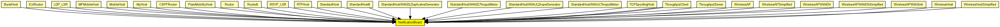
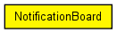

Using NotificationBoard, modules can now notify each other about "events" such as routing table changes, interface status changes (up/down), interface configuration changes, wireless handovers, changes in the state of the wireless channel, mobile node position changes, etc.
The NotificationBoard has exactly one instance within a host or router model, and acts as a intermediary between module where state changes can occur and modules which are interested in learning about those changes.
NotificationBoard is accessed via direct C++ method calls (not message exchange). Modules can "subscribe" to categories of changes (e.g. "routing table changed" or "radio channel became empty"). When such a change occurs, the corresponding module (e.g. the RoutingTable or the physical layer module) will let NotificationBoard know, and it will disseminate this information to all interested modules.
The following diagram shows usage relationships between types. Unresolved types are missing from the diagram. Click here to see the full picture.
The following diagram shows inheritance relationships for this type. Unresolved types are missing from the diagram. Click here to see the full picture.
If a module type shows up more than once, that means it has been defined in more than one NED file.
| BurstHost (compound module) |
Definition of an IP node with a transport generator that connects to IP directly, without TCP or UDP. |
| ExtRouter (compound module) |
External router. |
| LDP_LSR (compound module) |
An LDP-capable router. |
| MFMobileHost (compound module) |
Models a mobile host with a wireless (802.11b) card in ad-hoc mode. This model contains the Mobility Framework's 802.11 implementation, Nic80211, and IP, TCP and UDP protocols. The mobility model can be dynamically specified with the mobilityType parameter. |
| MobileHost (compound module) |
Models a mobile host with a wireless (802.11b) card in ad-hoc mode. This model contains the new IEEE 802.11 implementation, Ieee80211Nic, and IP, TCP and UDP protocols. The mobility model can be dynamically specified with the mobilityType parameter. |
| MyHost (compound module) | (no description) |
| OSPFRouter (compound module) |
An OSPFv2 router. |
| PlainMobilityHost (compound module) |
A host for demonstrating mobility models only -- it contains no protocol layers at all. |
| Router (compound module) |
IP router. |
| Router6 (compound module) |
IPv6 router. |
| RSVP_LSR (compound module) |
An RSVP-TE capable router. |
| RTPHost (compound module) | (no description) |
| StandardHost (compound module) | |
| StandardHost6 (compound module) | |
| StandardHostWithDLDuplicatesGenerator (compound module) |
IP host with TCP, UDP, SCTP layers and applications AND PPPInterfaceWithDLDuplicatesGenerator. |
| StandardHostWithDLThruputMeter (compound module) |
IP host with TCP, UDP, SCTP layers and applications AND PPPInterfaceWithDLThruputMeter. |
| StandardHostWithULDropsGenerator (compound module) |
IP host with TCP, UDP, SCTP layers and applications AND PPPInterfaceWithULDropsGenerator. |
| StandardHostWithULThruputMeter (compound module) |
IP host with TCP, UDP, SCTP layers and applications AND PPPInterfaceWithULThruputMeter. |
| TCPSpoofingHost (compound module) |
IP host with TCPSpoof in the application layer. |
| ThroughputClient (compound module) | (no description) |
| ThroughputClient (compound module) | (no description) |
| ThroughputServer (compound module) | (no description) |
| WirelessAP (compound module) |
Models a 802.11 Access Point. It can be used in conjunction with WirelessHost, or any other host model containing WirelessNicSTA. |
| WirelessAPSimplified (compound module) |
Models a 802.11 Access Point, but using a simplified NIC that does not support handovers. It should be used in conjunction with WirelessHostSimplified, or any other host model containing WirelessNicSTASimplified. |
| WirelessAPWithEth (compound module) |
Models a 802.11 Access Point with Ethernet ports. It can be used in conjunction with WirelessHost, or any other host model containing WirelessNicSTA. |
| WirelessAPWithEthSimplified (compound module) |
Models a 802.11 Access Point with Ethernet ports, but using a simplified NIC that does not support handovers. It can be used in conjunction with WirelessHostSimplified, or any other host model containing WirelessNicSTASimplified. |
| WirelessAPWithSink (compound module) |
Well, it Models a 802.11 Access Point with a Sink. |
| WirelessHost (compound module) |
Models a host with one wireless (802.11b) card in infrastructure mode. This module is basically a StandardHost with an Ieee80211NicSTA added. It should be used in conjunction with WirelessAP, or any other AP model which contains Ieee80211NicAP. |
| WirelessHostSimplified (compound module) |
Models a host with one wireless (802.11b) card in infrastructure mode, but using a simplified NIC that does not support handovers. This module is basically a StandardHost with an Ieee80211NicSTASimplified added. It should be used in conjunction with WirelessAPSimplified, or any other AP model which contains Ieee80211NicAPSimplified. |
| Name | Value | Description |
|---|---|---|
| display | i=block/control |
// // Using NotificationBoard, modules can now notify each other about // "events" such as routing table changes, interface status changes (up/down), // interface configuration changes, wireless handovers, changes in the state // of the wireless channel, mobile node position changes, etc. // // The NotificationBoard has exactly one instance within a host or router // model, and acts as a intermediary between module where state changes // can occur and modules which are interested in learning about those // changes. // // NotificationBoard is accessed via direct C++ method calls (not // message exchange). Modules can "subscribe" to categories of changes // (e.g. "routing table changed" or "radio channel became empty"). // When such a change occurs, the corresponding module (e.g. the RoutingTable // or the physical layer module) will let NotificationBoard know, and // it will disseminate this information to all interested modules. // simple NotificationBoard { parameters: @display("i=block/control"); }